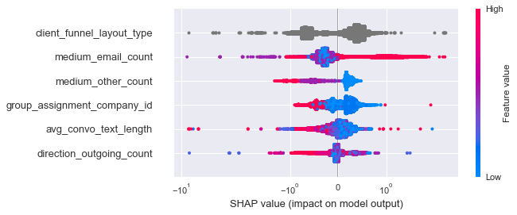

I had a favorite subject in high school- Economics. So with all the vigor only an 18-year-old could have, I bundle off to the London School of Economics and Political Science (LSE) to pursue BSc Economics.
2018
The Very First Time
Outside of academics, I join 180 Degrees Consulting, the world's largest consultancy for non-profit organizations, working under British politician Dr. Syed Kamall in using data analytics to devise optimal business strategies for start-ups. My interest in data is piqued.
2019
Summer Love is Forever
In my penultimate year of undergraduate studies, I decide to spend a summer at Peking University, pursuing a course in Big Data Analytics for Businesses. I fall madly in love with the field.
2020
School Again?!
Armed with a newfound passion, I pursue MSc Business Analytics (Data Science) at Columbia University, which focuses on applying data science to solve critical business challenges. Concurrently, I make the best memories and friendships in New York City that I'll treasure for a lifetime.
Increased demand prediction accuracy by 9.4%. Cost savings of $3.4 million.
NLP: Scoring Q&A algorithms
Competed in Google Research's Question-Answering Labelling Competition.
Top 15% out of 1571 participants.
Predicting prospect conversion
I worked as a Student Machine Learning Engineer at Funnel, an AI start-up in NYC.
50% increase in successful prospect conversions.
Predicting click-through rates
Competed in Columbia Engineering competition open to Masters students.
Placed 4th out of 200 participants.
Get In Touch!
Forecasting Apple's Supply Chain Costs
ARIMA
Desktop application that uses ARIMA models to predict cost and detect errors. Data visualisation dashboarding on Tableau to depict costs across components and time. Cost savings of $20 million yearly.
About
I worked as a Student Data Scientist at Apple, in a team of 5 students from Columbia Engineering.
Apple purchases components parts for its products from third party suppliers. The prices of these parts can be volatile at times due to trends and seasonalities, which snowballs into significant supply chain cost impacts.
Our project uses ARIMA models to predict a reasonable cost range for hundreds of parts in each month. These models work in the back-end of the following desktop application:
The application takes in data on component part costs, in both Excel and CSV formats. Upon running the ARIMA models, it then flags out warnings for component parts whose costs are higher than they should be, and produces analysis reports explaining the likely reasons behind the cost spike.
This is used in real-time to catch areas in which Apple may be overpaying in its supply chain, or used on an ex-ante basis to negotiate future part costs with suppliers.
Results: Making an impact at Apple
The ARIMA models have a small average forecasting error of < 0.1% MAPE (Mean Absolute Percentage Error). This allows component part costs to be accurately forecasted, translating into cost savings of $20 million annually.
Project Methodology
1. Data simulation
Remove outliers in data to discard noise. Next, simulate data for component parts with lesser cost history data using a normal distribution with the same mean and variance as the available data.
2. Train & tune ARIMA hyperparameters using Grid Search
We build one ARIMA model for each component part's cost. As such, 768 models are built. For each model, grid search for its optimal ARIMA (p, d, q) hyperparameters using k-fold cross-validation,
where the optimal hyperparameters are determined by the lowest MAPE on a left-out test set.
3. Make predictions with prediction intervals
When predicting the cost of a component part for the next month, apart from simply outputting cost predictions, calculate a 95% confidence interval for the prediction. This serves as a reasonable cost range for the part. Below is a graphical illustration, where the cost range is shown as a shaded grey area.
Still curious?
My team made a presentation to Apple management, and you can check out our slides below.
Windowed feature engineering for sequential information.
Regularized k-fold target encoding of categorical features.
Hyperparameter tuning using Bayesian Optimization.
Threshold-moving to minimize expected costs in real-world model deployment. Top 7% out of 1350 participants.
About
A central challenge for Spotify is to recommend the right music to each user. While there exists a large body of work on recommender systems, there is at present little work describing how users sequentially interact with the streamed content they are presented
with. Music content is unique in that the question of if, and when, a user skips a track is an important implicit feedback signal on the quality of the system's recommendation.
In the Spotify Sequential Skip Prediction Challenge, I explore this important and understudied problem in music streaming by building a model that predicts whether a user will skip or listen to tracks that they are streamed, given their immediately preceding interactions in a listening session. The model's accuracy score of 76.8% places in the top 7% on the challenge leaderboard, out of 1350 participants.
Project Methodology
1. Feature engineering to capture sequential information
Since the aim of this paper is to predict sequential track-skipping behaviour, it is crucial to engineer
smart features that are able to capture the sequential nature of our data. Some of the features engineered for this include:
skip_previous: Binary variable that depicts if the track encountered right before the current one was skipped by the user.
skip_prop_prior_to_track: Depicts the proportion of skips that the user has made on all tracks encountered prior to the current track.
skip_prop_prior_to_track_SD: Depicts the
standard deviation of skip_prop_prior_to_track at each point in time.
This depicts the consistency of the user’s skipping action prior to the current track.
For instance, skip_prop_prior_to_track_SD=0 on track 5 implies that the user had made the same action on all of
the 4 prior tracks (either skipped all or not skipped all). We can therefore be more certain of the
predictive power of skip_prop_prior_to_track for forecasting user action on this 5th track, since the
user is very likely to also make the same action. As such, the lower the skip_prop_prior_to_track_SD,
the more consistent the user’s past track-skipping behavior, and the more certain we are in predicting
user action on the next track.
In particular, skip_previous and skip_prop_prior_to_track
are found to be among the most important predictors of track-skipping behavior:
Target Encoding is the substitution of a category with the mean target value for that category.
However, this introduces target leakage since the target-encoded value for an observation includes the effect of that observation's target value,
thus this encoded feature value for the observation has the target baked inside it.
K-Fold Target Encoding builds upon traditional Target Encoding by alleviating this issue.
It ensures that the target value of an observation is not used to compute its target-encoded predictors.
The dataset is first split into k folds, and the mean target value for each category in the ith fold is computed using data in the other k-1 folds.
The regularized aspect next comes into play to further prevent overfitting.
In order to provide regularization, I additionally add random noise into the target-encoded values for each category.
3. Select metric of focus: F2-Score
The metrics of particular significance in our specific business case are:
Recall: It is of greater business utility to identify tracks that will be skipped over ones that will
not. Identification of these songs can pave the way for Spotify to improve on their track
recommendation system.
Precision: It is important for the model to be certain when identifying a track that will be skipped.
F2-Score: Given our combined emphasis on both Recall and Precision, I ultimately look at the
F2-Score as a combined measure of both. In particular, choosing the F2-Score over the more
commonly utilized F1-Score implies Recall is weighed twice as heavily as compared to Precision, as opposed to equally.
This follows from my assumption made above that a FN generates twice the cost of a FP for
Spotify in real-world model deployment.
4. Train & tune XGBoost hyperparameters using Bayesian Optimization
I utilize a Bayesian Optimization search method with stratified k-fold cross validation in order to obtain the
optimal hyperparameters in the most efficient manner.
This is as compared to using simpler
hyperparameter search methods such as Grid Search and Random Search, where each
hyperparameter combination searched during tuning is independent of the last. In contrast, Bayesian
Optimization uses knowledge of previous iterations of the algorithm such that each new search is
guided from previous search results. This allows the algorithm to obtain optimal hyperparameters in
as few iterations as possible, thus reducing computational cost.
One cool takeaway: Threshold-moving for real-world model deployment
As opposed to simply using the default decision threshold of 0.5 to classify a positive condition, threshold-moving is important in the real-world deployment of models.
The default threshold of 0.5 will only be optimal if the business costs of a False Negative (FN) and a False Positive (FP) are equal. However, this is rarely the case in reality.
In this project, an FP occurs when a song is identified to be skipped and thus not recommended to a user, but in
fact would not have been skipped. Hence, costs are incurred due to the user not being
exposed to a song he would have enjoyed. However, this presents a relatively lower cost to
Spotify since user satisfaction is unaffected.
On the other hand, a FN occurs when a song identified to not be skipped is in fact skipped by a
user. Costs are incurred due to lower user satisfaction with the streaming service. This presents a
much higher cost to Spotify. As such, the costs of FP and FN are unequal.
I assume that a FN generates twice the cost of a FP for
Spotify. For each decision threshold, I obtain the resulting confusion matrix and subsequently
compute expected costs as 2ùêπùëÅ + ùêπùëÉ, resulting in the below graph:
The optimal threshold is the one resulting in
the minimum expected cost. This optimal threshold is found to be 0.2655, ie. a track is classified to be skipped as long
as its predicted probability from the final XGBoost model is above 0.2655.
Still curious?
I authored a research paper covering the details of my methodology and findings when I took a PhD-level Machine Learning class at Columbia. This paper was awarded the top mark in the class (full-mark grade).
ARIMAX, Elastic Net, Random Forest, XGBoost, Deep Neural Network
SQL to query and manipulate big data on SAS.
Designed, implemented, and back-tested optimal models using custom scoring metrics.
Feature selection using Recursive Feature Elimination.
Data visualisation dashboarding on Microsoft Power BI to depict business impact of new models. Increased demand prediction accuracy by 9.4% from existing models.
I designed an approach that utilized Recursive Feature Elimination (RFE) through Permutation Feature Importance with Random Forests. This new approach improves on the current feature selection approach used by the team through the following aspects:
2. Feature selection at different levels
Next, I explored different levels in which to conduct feature selection. Feature selection can be conducted at 3 main levels:
Among the 3 levels, I determine the optimal level at which feature selection should be conducted by back-testing across various time periods to find the level that results in the highest forecasting accuracy.
3. Benchmark suite of machine learning models: Elastic Net, Random Forest, XGBoost, Deep Neural Network
This translates into cost savings of $3.4 million across the various categories:
Project Methodology
1. Feature engineering: To extract time nature of data
Lag variables of past demand and consumption information
Rolling mean and rolling standard deviation of existing features
Calendar signatures, eg. Week number in year
2. Encode categorical variables using Hash Encoding
The categorical variables in the dataset are of high cardinality. As such, I utilize Hash Encoding, which reduces the number of new features created from the encoding to a lower dimension.
This dimension is chosen from a trade-off: The larger the number of dimensions, the more information we retain from the original categorical feature after encoding it. However, this also results in sparser feature matrices that may reduce the performance of any machine learning model.
3. Train & tune Random Forest hyperparameters using Random Search
I utilize a Random Search method with 5-fold cross validation, conducted in parallel with Apache Spark backend for faster runtime.
Taking extra care to group highly collinear features together to obtain unbiased importances.
5. Feature selection using Recursive Feature Elimination (RFE)
RFE is a recursive process in that it progressively considers smaller and smaller subsets of the original features.
The process starts by using all the original features, building a Random Forest with them, and obtaining feature importance scores for all the features. This describes steps 1 and 2 outlined above.
Next, we discard the feature identified to be the least important, and repeat the above.
This repetition continues until the size of the feature set has been incrementally reduced by 1 until it becomes 0.
Following which, the optimal feature subset is the one that produces the highest model accuracy score on the validation set.
6. Train model on optimal subset of features
Obtain test set predictions for various time periods to validate model
7. Repeat for various levels of forecasting to determine optimal level
As outlined above, there are 3 main levels of forecasting investigated: At the business level, product level, and product-store level.
8. Repeat for different models to determine optimal model
Machine learning is an iterative process. I explore the following models to determine the best for this project's use-case: Elastic Net, Random Forest, XGBoost, Deep Neural Network.
One cool takeaway: Reducing bias in permutation feature importance in the presence of highly collinear features
Permutation feature importance is touted as the gold-standard method for obtaining true feature importances. This is as opposed to other methods such as impurity-based feature importances which tend to inflate the importance of continuous or high-cardinality categorical variables (Read more about this here! Beware Default Random Forest Importances).
It works by randomly shuffling (permutating) each feature such that the relationship between that feature and the target is broken. With this relationship now broken, we use the same model to predict the target. The importance of the feature is then measured as the fall in accuracy of the model from before and after it was permuted.
However, trouble sets in when there exists highly collinear features in the data. In this case, permutating one feature will have little effect on the models performance because it can get the same information from a correlated feature. This leads to the traditional permutation feature importance method understating the importance of such features.
To overcome this problem, I group features that are collinear and permute them together as a meta-feature. This allows me to obtain the true unbiased importance of highly collinear features as a group.
Deep learning using Keras, PyTorch.
Multi-target task: Predict 30 targets using 1 model.
Text embeddings extraction using GloVE, BERT. Top 15% out of 1571 participants.
About
Question-answering is a discipline within the field of natural language processing that is concerned with building systems that automatically answer questions posed by humans in a natural language.
This project builds a deep learning model that predicts the quality of automated answers to human-posed questions, taking only text features of the question title, question body, and answer.
Project Methodology
1. Preprocess text features
▪ Convert all text to lowercase
▪ Separate joined words commonly used in speech. For instance, “I’m” is separated into “I am”
▪ Remove punctuation
▪ Remove stop words
2. Create numeric representations for text features
One of the main design decisions when building a deep learning model with text data is the question of whether to utilize pre-trained word embeddings or to construct an embedding layer within the model to be trained from scratch with respect to the problem at hand.
Since the dataset available for this task is relatively small with 10,000 rows, I choose to employ the transfer learning method instead of training my own.
I explore 2 state-of-the-art pre-trained algorithms for this: GloVe and BERT.
2.1. GloVE (Global Vectors for Word Representation)
GloVE is a pre-trained word embedding algorithm trained on Wikipedia and Gigaword data. The advantage of GloVe lies in its utilization of both local statistics (local context information of words) and global statistics (word co-occurrence) to obtain word embeddings.
I first tokenize and pad all text using Keras’ Tokenizer class. Within the subsequent model architecture, I replace the parameters of the embedding layer with these pre-trained embeddings and freeze the layer, preventing its weights from being updated during model training.
Importantly, since the test set must remain unseen to avoid introducing bias, I utilize the same tokenizer trained on the training set in order to tokenize words in the test set. This implies that words found only in the test set and not the training set cannot be embedded, and have their embeddings set to 0. I also pad to the same length and specifications as the training set.
2.2. BERT (Bidirectional Encoder Representations from Transformer)
BERT is a pre-trained language model created at Google that applies the bidirectional training of transformers to language modelling, allowing for a deeper sense of language context. Traditional single-direction language models produce a fixed representation for a word regardless of the context within which the word appears. In contrast, BERT’s representations for words are dynamically informed by the words around them.
I follow a strategy proposed by BERT’s original creators: I first pass the dataset’s text data into the pre-trained BERT model and obtain the weights on its last 4 hidden layers. The summation of these weights is then used as input features for the subsequent deep learning model. These were conducted using PyTorch with the Hugging Face library.
3. Model architecture: LSTM with Convolutional layers
There exists many different model architectures possible for this prediction task. In order to determine the optimal architecture, I took inspiration from the winners of similar competitions on Kaggle. In particular, I experiment with the model architecture used by the winner of a recent NLP competition held by Quora:
Importantly, I choose a combination of both convolutional and LSTM layers, an increasingly popular model architecture in text modelling. The presence of both types of layers builds a network that is able to utilize both spatial and temporal information. Specifically, the convolutional layer extracts spatially-aware features from word embedding inputs and the subsequent LSTM layer interprets these features across time.
4. Model tuning: Increase model regularization
I carry out model tuning using a left-out test set.
▪ Increase traditional dropout
▪ Add recurrent dropout to LSTM layer in order for recurrent weights to be additionally regularized
5. Model tuning: Increase model complexity
▪ Increase number of convolutional layers from 1 to 2
▪ Increase number of LSTM layers from 1 to 3
▪ Tune learning rate used under the Adam optimizer to determine an optimal value
One cool takeaway: Selecting optimal loss function under multi-target task
For each question-answer pair, the 30 targets to be predicted are the quality of the question and answer along 30 different metrics, as follows:
At first glance, since the 30 targets are each scored between 0 and 1, the immediate impression is that all 30 targets are continuous. However, investigating the targets using a boxplot reveals the following:
10 of these targets take on less than 10 unique values each. This indicates that these 10 targets should instead be regarded as categorical instead of continuous, contrary to the initial impression that all 30 targets are continuous.
In light of this, I implement the binary cross-entropy loss for my model, due to:
As mentioned, 10 of the 30 targets should instead be regarded as categorical instead of continuous. This lends strength towards utilizing binary cross-entropy loss instead of regression-based losses.
More importantly though, all the targets have a value of between 0 and 1. As such, they can be treated akin to probabilities under categorical target prediction. The usage of binary cross-entropy loss ensures that predictions for these target values remain between the range of 0 and 1, as compared to using traditional regression-based losses which will not.
Still curious?
I authored a research paper covering the details of my methodology and findings when I took a PhD-level Deep Learning class at Columbia.
Predicting Funnel's prospect conversion
Logistic Regression, CatBoost, XGBoost
Unique modelling approach of building 1 model per stage of prospect journey.
Extensive feature engineering from working with business stakeholders to obtain domain knowledge.
Tailored machine learning metrics to business goals.
Black-box model explanation using SHAP (SHapley Additive exPlanations). 50% increase in successful prospect conversions.
About
I worked as a Student Machine Learning Engineer at Funnel, as part of a team of 5.
Our team consisted of 2 students from Columbia Engineering and 3 MBA students from Columbia Business School, coming together to tackle a real-world business problem at Funnel.
Funnel provides property management software whose target group are leasing agents.
Leasing agents use their software to keep track of prospective renters who express interest in the properties they manage.
Our project involves creating a machine learning model that scores prospective renters in terms of their conversion rate, ie. probability of eventually renting from the leasing agent.
Prior to this project, leasing agents who use Funnel's software have no predetermined method of filtering through hundreds of new prospective renters that come in everyday, in deciding which ones are more important to follow up on.
This project aims to enhance the software's capabilities by integrating this machine learning model into its system. With this, all prospective renters that express interest will be ranked by predicted conversion rate and leasing agents
can then prioritize them accordingly to help maximise conversion results. This increases the utility that Funnel's software provides to leasing agents.
Results: Making an impact at Funnel
In total, we built 3 models that each predicts a prospective renter's conversion rate at a distinct point of their journey.
The models have an ROC-AUC of 91%, 60%, and 66% respectively.
This means that the first model ranks 91% of prospective renters correctly in terms of their conversion rate.
This leads to:
Time savings of 250 hours a year from leasing agents not having to manually go through each new prospect before deciding who to reach out to. 50% increase in successful rents by leasing agents who are able to go after the most lucrative prospects from the get-go. 30% increase in Funnel's software functionality thus enhancing its utility to leasing agents.
Data
This project uses 60 million records with 400+ features that contain information about properties, prospective renters, and their interactions with leasing agents.
Project Methodology
1. Data exploration: Data characteristics unique to this project
Investigations reveal a special characteristic of this project's data:
Different subsets of the data are obtained at different points in time of the prospective renter's journey with a leasing agent.
Specifically, more data is obtained as this journey progresses through the following stages:
Stage 1: Prospect creation
This stage occurs when a new prospective renter first expresses interest in a property. Here, the prospect has just entered into our database and we possess only basic information on them, such as:
▪ Prospective renter data: Age, Gender, ...
▪ Source data: How the prospective renter heard about the property
▪ Property data: Data on the property that the prospective renter expressed interest in
Stage 2: Communication
This stage occurs when the leasing agent and prospective renter subsequently start to exchange more and more communications. Over time, more data is accumulated on these interactions, such as:
▪ Medium of communications: Call, Email, Text, ...
▪ Number of communications per medium
▪ Reply speed of prospective renter
Stage 3: Property Viewing
This stage occurs when the prospective renter tours their property of interest. Here, we further obtain data on viewings, such as:
▪ Medium of viewing: In-person, Video call
▪ Speed of scheduling a viewing
▪ Outcome of viewing: Deposit put down, Deposit not put down
2. Make modelling decisions: Build 1 model per stage of prospective renter's journey
Given the above, instead of creating one overarching model, we develop a three-model approach, to be respectively used at each stage of the prospective renter's journey, when we procure new data.
Each subsequent model uses more features than the last, since it uses the data of its preceding models, as well as the new data that comes in.
Model 1: Used on prospective renters at prospect creation stage
Model 2: Used on prospective renters at communication stage
Model 3: Used on prospective renters at property viewing stage
Modelling in this manner has an important implication: We group prospective renters in each of the 3 stages of their journey.
For each stage, the corresponding model predicts conversion rate for only propective renters currently in that stage.
A higher predicted conversion rate in one stage would mean that that prospective renter is more likely to convert, out of all the other prospects in that same stage as him.
The leasing agent should therefore prioritize following up on him, as opposed to other prospects in the same stage.
This runs opposite to the alternative modelling approach, which is to lump all prospective renters together, regardless of journey stage,
and run an overarching model on all of them to obtain predicted conversion rates. This approach is far less useful, since it is clear
that the model would always predict a higher conversion rate to prospective renters in the later stages compared to former stages.
Such information is unhelpful since one would be able to deduce this intuitively without the help of machine learning.
As such, the modelling decisions made in this project were carefully designed to provide the maximal utility possible to a leasing agent using Funnel's software,
in particular to provide him information that he would not have been able to deduce without the help of machine learning.
3. Feature selection: 400 to 50 features
Since the dataset contains 400+ features, feature selection becomes imperative. This is because using a large number of features in modelling can lead to:
▪ Slow model training
▪ Large disk memory required for training
▪ Model performance degredation, in cases where many uninformative features are present
We thus select features by looking at their Permutation Importance in a CatBoost model, resulting in a final subset of ~50 features.
4. Feature engineering
Hypothesizing that feature engineering would be key in model performance for this project,
we worked extensively with business stakeholders in Funnel to obtain domain knowledge behind each feature.
This allowed us to engineer useful features to provide greater signal to our model, such as:
▪ Creating time differences between when a prospective renter reaches out to a leasing agent and when the leasing agent replies
▪ Text analysis on conversations between a prospective renter and leasing agent: Length of text, text content, ...
5. Train & tune model hyperparameters using Bayesian Optimization: Logistic Regression, CatBoost, XGBoost
We benchmark the above suite of models to determine the best for our use-case.
To tune each model, I utilize a Bayesian Optimization search method with stratified k-fold cross validation in order to obtain the optimal hyperparameters in the most efficient manner.
Importantly, we choose to explore CatBoost since our use-case seemed ideal for it to shine:
▪ The final subset of features selected for modelling contains many categorical features.
CatBoost provides in-built categorical feature encoding, thus cutting down on significant time required for such encoding tasks prior to model building.
Read more about the CatBoost's hyperparameters for categorical feature encoding here!
▪ The dataset is extremely large with 60 million rows. This puts an extra strain on computational time for model building.
CatBoost has been shown to be 8x faster than the state-of-the-art XGBoost.
Read more about CatBoost:
CatBoost VS XGBoost VS LightGBM,
What's so special about CatBoost?
Our modelling results find CatBoost to indeed be the best performing model.
6. Obtain SHAP feature importances
Apart from building a highly performing machine learning model, another key aspect of this project is to investigate which variables contribute the most to a prospective renter's conversion rate,
as well as the direction of its contribution (does a greater value for the feature increase or decrease conversion rate).
Traditional impurity-based or permutation-based feature importance methods are unable to give this direction of contribution. As such, we utilize SHapley Additive exPlanations (SHAP) feature importances, which uses game theory in its computations.
We obtain the following SHAP feature importance plot depicting the most important features:

Each point on the below plot is a Shapley value for a feature and a prospective renter.
The Shapley value is the weighted average contribution of a feature value to the prediction.
It relates to convertion rate as follows: Positive Shapley values indicate a conversion rate of more than 0.5 and negative Shapley values indicate a conversion rate of less than 0.5.
The position on the y-axis is determined by the feature and on the x-axis by the Shapley value.
The color represents the value of the feature from low to high.
Lastly, the features are ordered according to their importance.
This plot therefore answers the required questions we set out to investigate about feature importances.
One cool takeaway: Using ROC-AUC to tailor metrics to business goals
Machine learning models can be measured across a suite of metrics.
In order to make modelling decisions that push my project towards attaining its business goals, we specifically tailor the metric used in modelling (hyperparameter tuning, model selection) to these goals.
We choose the ROC-AUC (Area under the ROC curve) due to 3 key reasons:
1. Ranking
Funnel aims to use the models built to rank prospective renters in terms of conversion rate, in order for leasing agents to prioritize them accordingly.
This immediately ties into ROC-AUC, since it measures model performance as the percentage of prospective renters that are correctly ranked by the model in terms of their conversion rate.
2. Choice of curves: ROC VS PRC
For binary classification tasks, the typical choice is between the Receiver Operating Curve (ROC) and Precision-Recall Curve (PRC).
The ROC curve plots True Positive Rate against False Positive Rate and takes into account model performance on both the True Positive and True Negative classes.
On the other hand, the PRC curve plots Precision against Recall, both of which are metrics that do not take into account the True Negative condition. As such, it takes into account model performance on only the True Positive class.
In this project, it is equally important to catch a prospective renter who will rent (True Positive), as well as a prospective renter who will not rent (True Negative).
This is because the leasing agent can utilize different engagement strategies for each.
Thus, we decide to use the ROC curve.
3. Properties of AUC
A key property is that AUC is scale-invariant, ie. it measures how well conversion rates are ranked, rather than the absolute values of conversion rates.
Since the business goal is to rank prospective renters, we are less concerned with obtaining an exact conversion rate per prospect, as opposed to
obtaining a correct ranking for them. This presents another strong argument for using the AUC.
Still curious?
My team made a presentation to Funnel, and you can check out our slides below.
Predicting Avazu's click-through rates
CatBoost, XGBoost, LightGBM
Ensembled 12 CatBoost, XGBoost, LightGBM models using Stacking, with Elastic-Net Logistic Regression as meta-model.
Applied numerous categorical feature encoding methods on dataset with purely categorical features.
Extensive feature engineering to capture temporal nature of consumer clicks. Placed 4th out of 200 participants.
About
I competed in a team of 3 in a Columbia Engineering competition open to Masters students.
This competition was adapted from Avazu's highly popular Kaggle competition in 2015, linked
here.
Avazu is a programmatic advertising platform that uses machine learning to decide which mobile advertisements get pushed to which consumers.
Its aim is to maximize advertising effectiveness by ensuring the correct target group receieves the advertisements they are most interested in.
This competition is to predict consumer click-through rates on mobile advertisements, ie. whether a consumer clicks on an advertisement.
In online advertising, click-through rate is a very important metric for evaluating ad performance and is used in sponsored search and real-time bidding.
Data
This competition uses 4 million rows with ~30 features that contain information about the consumer's mobile device, the mobile advertisement, the website on which the advertisement was encountered, etc.
Each row depicts a specific user on a specific mobile device, encountering a specific mobile advertisement, and the target of whether the user clicked on it.
Project Methodology
1. Obtain training and test sets via time split: Due to time nature of data
It is critical to observe that the data involves a certain time-series nature to it.
The same consumer can encounter the mobile advertisements more than once at different points in time, some being the same advertisement as before and others being new advertisements.
The consumer's decision of whether to click on the advertisement, which is our target variable, can therefore be associated with the consumer's click history in the past.
As such, the rows in our dataset are no longer independent of each other.
In this situation, the typical method of dividing data into training and test sets via a random split can therefore introduce data leakage from the train to the test set.
We therefore split based on a cut-off date and time instead. This cut-off is chosen such that the training set is ~80% and the test set is ~20% of the data.
2. Feature engineering to identify unique consumers from device data
2.1. consumer
There are multiple columns in the data that tracks mobile device information,
such as device_ip, device_id, device_model etc.
We define a unique consumer as one that has the same value for all of such columns.
Thus, we create a new column, consumer, which is the string concatenation of the values in these columns.
consumer therefore defines the unique consumers in our dataset.
3. Feature engineering to extract time nature of data
3.1. click_history
This tracks the click history made by the same user up to the current point in time, depicted as a string of previous click history.
For example, assume there are 2 users, A and B, and they appear in the toy dataset below, with rows sorted chronologically.
Note that target refers to whether or not the user clicked on the mobile advertisement they encountered.
Thus, click_history is engineered from target, as follows.
time
user
target
click_history
0900
A
1
NA
0901
A
0
"1"
0902
B
0
NA
0903
A
1
"10"
0904
B
0
"0"
0905
A
0
"101"
0906
B
1
"00"
3.2. hour_of_day, day_of_week
We converted the original time column into 2 separate columns to better extract signal for our model.
3.3. device_id_count
This depicts the total number of mobile advertisements that each mobile device encounters up to the current point in time.
We hypothesize that this influences whether or not a user using that mobile device will click on the next advertisement they encounter.
3.4. hour_user_count
This depicts the total number of mobile advertisements that each user encounters up to the current point in time, in each hour of day.
Again, we make the same hypothesis as above.
4. Feature cleaning of rare values
For catgorical features, we remove rare feature values, defined as levels of the feature that only appear once.
We group such levels together into a "Rare" category.
The dataset consists of purely categorical features.
Thus, we explore multiple encoding methods to determine the best methods per feature type.
5.1. Hash Encoding: For features with high cardinality
Hash Encoding reduces the number of new features created from the encoding to a lower dimension compared to that of the original feature.
This is useful for features with high cardinality.
5.2. Ordinal Encoding: For features with intuitive ordering
For categorical features in which there exists an intuitive ordering among feature levels,
we use Ordinal Encoding to capture this ordering for the model.
5.3. Ordered Target Encoding: For remaining features
Target Encoding is the substitution of a category with the mean target value for that category.
However, this introduces target leakage since the target-encoded value for an observation includes the effect of that observation's target value,
thus this encoded feature value for the observation has the target baked inside it.
Ordered Target Encoding builds upon traditional Target Encoding by alleviating this issue.
It is an encoding method proposed by the developers of CatBoost, and is regarded to be part of the reason why CatBoost performs so well on categorical data.
It thus also goes by the name CatBoost Target Encoding.
Ordered Target Encoding works as follows:
1. Randomly permute the rows of the training set.
2. The target-encoded value for a category in the ith observation is computed as the mean target value of that category in all previous observations placed before it in the dataset.
This is akin to taking a running average down the dataset.
3. This creates a problem: For the first few rows in the dataset, target-encoded values have high variance since they were calculated using very few observations.
However, as we move down the dataset, the target-encoded values become increasingly stable.
This means the initial part of the dataset has weak estimates compared to the rest of it,
and this initial part of the dataset was randomly chosen from Step 1.
CatBoost handles this problem by conducting more than 1 random permutations of the dataset and repeating all the above steps for each permutation.
Assuming CatBoost conducts n random permutations, it then obtains n different target-encoded values for each categorical feature in each observation.
At each step of gradient boosting, CatBoost randomly chooses one of these target-encoded values to be used.
This alleviates the problem outlined.
6. Train & tune model hyperparameters using Bayesian Optimization: CatBoost, XGBoost, LightGBM
To tune each model, I utilize a Bayesian Optimization search method with stratified k-fold cross validation in order to obtain the optimal hyperparameters in the most efficient manner.
The rationale for choosing these specific models are:
▪ XGBoost: Strong history of high performance on Kaggle competitions
▪ LightGBM: A variant of XGBoost with faster computational speed, useful given our large dataset
▪ CatBoost: A variant of XGBoost with in-built categorical feature encoding, useful given the many categorical features in our dataset
In total, 12 CatBoost, XGBoost, and LightGBM models were trained and tuned.
7. Ensemble models: Using Stacking, with Elastic Net Logistic Regression as meta-model
1. Feed the predictions of each of the 12 models as inputs to an Elastic Net Logistic Regression.
2. Train and tune Elastic-Net Logistic Regression using Bayesian Optimization search method with stratified k-fold cross validation.
3. The Elastic-Net Logistic Regression essentially combines the predictions of the 12 models via a weighted average.
The prediction of the Elastic-Net Logistic Regression is therefore our final prediction.
7.1. Why Logistic Regression?
We choose Logistic Regression as our meta-model for Stacking since this is a classification task,
thus we require the output of our meta-model to be constrained between 0 and 1.
7.2. Why Elastic Net regularization?
Since the inputs to the Logistic Regression are the predictions of each of the 12 models,
using an Elastic Net regulatization on the regression essentially tells the regression to figure out how to best combine the 12 models' predictions (which predictions to put greater or less weight on)
to optimally fit the target.
This allows us to ensemble the 12 models' predictions in a more systematic manner, as opposed to taking a simple average of the 12 predictions.
8. Re-run on full data
In all the above steps, we had divided the competition data into a training set (80%) and test set (20%).
Now, armed with the best hyperparamteters found for each model as well as the meta-model, we re-run all of the above on the full competition training dataset to maximize training data before using the models to obtain a final prediction for the competition test set.